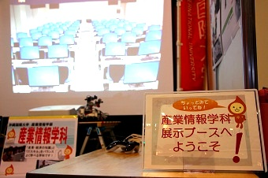
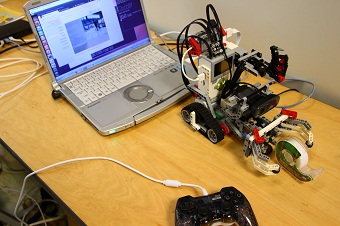
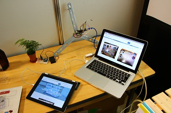
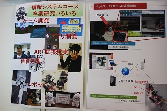
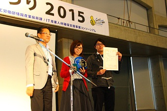
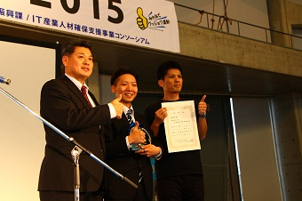
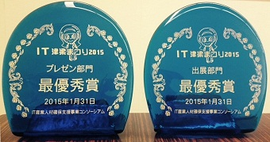
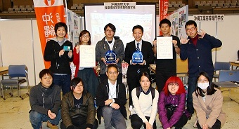

ＩＴ津梁まつり2015「プレゼン部門」「出展部門」で最優秀賞を受賞しました
1月30日と31日の両日に沖縄コンベンションセンターで開催された「ＩＴ津梁まつり2015」に、本学産業情報学科が出展参加いたしました。
ＩＴ津梁まつりは沖縄県のＩＴ人材育成やＩＴ産業の興味・関心を高めることを目的に、企業や行政機関、教育機関が連携して開催しているイベントです。
今年は例年を超える3,000人以上の来場者が訪れ、大盛況となりました。
産業情報学科は情報システムコースの卒業研究の成果発表をメインに展示を行いました。
親子連れの方など多くの来場者に足を運んでいただきました。
ＩＴ津梁まつりの7部門のうち、本学は「ソフト＋ハード部門」「出展部門」「プレゼン部門」「ＥＴロボコン部門」にエントリーし、「出展部門」と「プレゼン部門」の2部門で最優秀賞を受賞しました。
安里ゼミの学生2名によるプレゼンテーションは審査員の高い評価を受けました。
また、出展部門は、来場者の投票により最優秀賞を獲得することが出来ました。
ご来場いただいた皆様に感謝申し上げます。
- 
- 
- 
- 
- 
- 
- 
- 